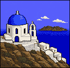
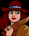
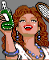

Never interrupt flow
An offer never appears mid-case, mid-chase, or during a promotion quiz — only at natural pauses (travel screen, case-closed, menu).
Csikszentmihalyi's flow, via Schell — The Art of Game Design6 CTA placements. 10 unlock waves — the same ones already in the design doc, untouched. Clara personally shows up only 6 times, so it still means something when she does.
Interactive prototype · click any highlighted CTA
Why each CTA sits where it sits
Every placement below traces back to one of these. If a proposed CTA can't cite one, it doesn't ship.
An offer never appears mid-case, mid-chase, or during a promotion quiz — only at natural pauses (travel screen, case-closed, menu).
Csikszentmihalyi's flow, via Schell — The Art of Game DesignLocked content is never a blank void. The passport shows the shape of the unlit world; the database shows one real fact and blurs the rest.
Schell — The Art of Game Design; Koster — A Theory of FunThe primary offer fires the moment a player's stake is highest: right after 13 free wins and a personal rival who just got away.
Eyal — Hooked (Trigger → Action → Reward → Investment)Single price, no countdown, no fake scarcity. "Not now" and "Restore purchase" are always as visible as "Buy."
Luton — Free-to-PlayStamp counts, database completion, and a mastermind roster all make "how much is left" visible — ownership of a whole set, not a single item.
Chou — Actionable Gamification (Octalysis)A player who declines at the peak moment isn't nagged again — but the offer stays one tap away in the Database, the Passport, and a permanent menu entry, indefinitely.
Luton — Free-to-PlayCTA placement map
Five low-key placements a player can find whenever they're curious, plus the one moment — Clara's escape in Case 14, detailed further down — that does the actual selling.
1 Persistent menu bar — always there
2 Passport — locked map
30 / 231 stamped
Tap anywhere on the locked map to preview what's behind it.
Wave 1 unlocks instantly. The rest, you earn.
3 World Database — locked entry
Santorini · Greece — Southern Europe

RegionSouthern Europe, Aegean Sea
CurrencyEuro (€) — six more facts inside
Famous forWhitewashed cliffside villages, sunset views
One purchase. Then you earn the rest, wave by wave.
4 Travel screen — soft nudge
Case 12 of 14 · Ace Detective in progress
No purchase button here — on purpose.
5 Right after purchase — unlock ceremony
The sixth touchpoint · the one that actually sells
Clara runs five crime families. Each has a Boss (caught early) and a Successor (caught later, after the Boss falls). Only once all ten are behind bars does Clara run out of places to hide.
Original career, unchanged.
Her one early appearance. She tips you off: this is a syndicate.
Marquee regions. Last case of each wave: a Boss falls. No Clara yet.
Lesser-known regions. Last case of each wave: a Successor falls — and Clara shows up.
Last Successor falls. Clara has nowhere left. Chief Director awarded.
The last case of every wave is an arrest — locked to that wave's region and fame tier. Everything before it plays exactly like a normal case.
Same region, same crime family, same base design — recolored, not redrawn. A captured Boss can even tip you off about their Successor.
One appearance at Case 14, then one per Successor capture (waves 6–10). Six total across the whole campaign — not once every few cases.
The ten waves, at a glance — reused directly from the existing design doc. No new gating logic, no new content type, just a capture bolted onto the case each wave already ends on.
| Wave | Patent earned | Family & role | Clara? |
|---|---|---|---|
| W1 | Special Agent | Europe — Boss | — |
| W2 | Field Inspector | Americas — Boss | — |
| W3 | Senior Inspector | Asia — Boss | — |
| W4 | Inspector | Africa — Boss | — |
| W5 | Chief Inspector | Oceania & Frontiers — Boss | — |
| W6 | Superintendent | Europe — Successor | Clara |
| W7 | Commander | Americas — Successor | Clara |
| W8 | Deputy Director | Asia — Successor | Clara |
| W9 | Director | Africa — Successor | Clara |
| W10 | Chief Director | Oceania & Frontiers — Successor | Clara — final |
13 wins, then a personal rival who slips away. This is the only time Clara shows up before wave 6 — everything after this plays like a normal case until the Successor arcs begin.

The last case of every marquee wave (1–5) ends like this: a standard arrest, a standard promotion. Clara doesn't show up — that's deliberate. Her appearances are saved for later.

Five waves later the pattern breaks. Europe's Successor — who took over when the Boss fell — gets caught too. This time Clara is in the room, and gets out again.
The last Successor falls. Every family is gone. This is the one finale on this page that isn't a template — it's bespoke, because it's the only one that needs to be.
Progress display: reuses the existing RankProgress composable and casesToNextPromotion() — the same "N of M cases to next rank" counter already in the game. Add one caption line underneath naming the current family and role. No new meter to build.
Patents: free promotions stay unchanged (Sleuth, Private Eye, Investigator, Ace Detective — cases 1/5/9/13). Every wave's final capture then triggers the existing promotion quiz and awards that wave's patent, exactly as already documented: Special Agent → Field Inspector → Senior Inspector → Inspector → Chief Inspector → Superintendent → Commander → Deputy Director → Director → Chief Director. No new names, and no separate "final award" — Chief Director already is the wave-10 patent.
Paid value before Case 14
The first case after purchase draws from Wave 1 (Europe, 33 destinations) — already unlocked at purchase. Before Case 14, cap it at one new destination per case.
Unseal Wave 1 of the painted Passport and Wave 1's World Database entries immediately. New postcards, facts, and venues work in the next case.
Offer the optional +8-hour Travel Buffer, one Bureau hint, and Case Planner. Original Clock and free accessibility remain available.
CTA timing: the early offer appears only after an intentional tap on a locked Database destination or Passport tile. The primary offer appears after Clara escapes in Case 14. No offer interrupts a promotion or active case.
Open the generated paid-story asset review → Three escape options, three final-capture options, five route stamps, and native-size/in-context checks.
Everything else — postcards, map, country data, witnesses, clues, warrants, chase, jail, Database, Passport, travel screen, and the RankProgress counter — is reused unmodified. Ordinary World Case generation doesn't change; only each wave's final case adds a region + fame-tier filter, using CityInfo.region, which already exists on every city, free and paid.
Design basis: see "Design principles" above — Schell, Koster, Eyal, Luton, and Chou — for the source behind each placement. Net result, unchanged in spirit and now durable in mechanics: the wave system reveals the world at its own pace; a capture happens on schedule; Clara is rare enough that her six appearances still mean something.
Before this ships
Implemented in android/ — Play Billing, the ten-wave campaign, wave-aware world tools, and the paid comfort perks. One manual step remains outside the codebase.
Play Billing is fully wired (billing/BillingManager.kt), and unlockExpansion() has real callers from the Campaign menu, Passport, Database, and Case 14. A late purchase preserves the detective and begins Wave 1; Special Agent is earned only at the Wave 1 capture. The remaining external step is to create the in-app product in Play Console and enable sales. Full steps: docs/06-play-console-iap-setup.md.
Ships on the existing 10-wave, rank-gated reveal exactly as documented in 05-game-design-and-progression.md — same patents, same §7 fairness math, unmodified. The mastermind story rides on top as a forced culprit + a capture line on each wave's last case; it doesn't replace the gating.
Turned out CityInfo.region is messy free text on the 133 newer cities ("the Balkans (Southeast Europe)", not a clean "Europe" bucket) — not reliable for this. Progression.wave (already built for the reveal system) buckets every paid city into exactly the right marquee/lesser-known group instead, so the finale's route restriction is a one-line filter with no new data model.
The 5 Bosses and 5 Successors use 10 existing non-Clara dossier suspects — Lady Agatha Wayland, Merey LaRoc, Fast Eddie B. and the rest — all already shipping a portrait sprite.
Dismantle Clara's five crime families, one wave at a time — and finally catch her.